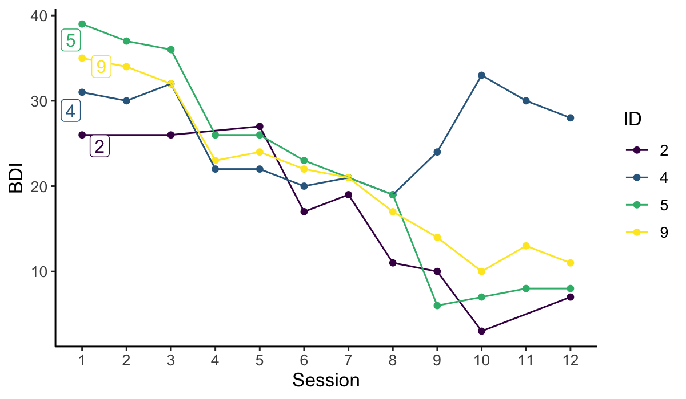

Sudden gains are large and stable improvements in an outcome variable between consecutive measurements, for example during a psychological intervention with multiple assessments (Tang and DeRubeis, 1999). The R package suddengains provides a set of tools to facilitate sudden gains research. It identifies sudden gains or sudden losses while allowing to apply adaptations of the standard criteria. It handles multiple gains by creating two datasets, one structured by sudden gains and one by participants. It also implements a function to specify which sudden gains to choose in case of multiple gains (e.g. the earliest or largest gain).
An interactive web application shinygains illustrates the main functions of this package and allows users to explore and understand the impact of different methodological choices.
To learn more about the background of this package see our paper in PLOS ONE. We have also created an open Zotero group collecting all the literature looking at sudden gains in psychological therapies. Please let me know if I missed anything or join the group and add papers yourself.
Installation
You can install the released version of suddengains from CRAN with:
install.packages("suddengains")And the development version from GitHub with:
# install.packages("devtools")
devtools::install_github("milanwiedemann/suddengains")Overview of the functions
The suddengains package comes with a range of features which can be categorised into:
-
Identify sudden gains:
-
select_cases(): Select sample providing enough data to identify sudden gains -
define_crit1_cutoff(): Uses RCI formula to determine a cut-off value for criterion 1 -
identify_sg(): Identifies sudden gains -
identify_sl(): Identifies sudden losses -
check_interval(): Checks if a given interval is a sudden gain/loss
-
-
Create datasets for further analysis:
-
extract_values(): Extracts values on a secondary measure around the sudden gain/loss -
create_bysg(): Creates a dataset with one row for each person -
create_byperson(): Creates a dataset with one row for each sudden gain/loss -
write_bysg(): Exports CSV, SPSS, Excel, or STATA files of the sudden gains data sets -
write_byperson(): Exports CSV, SPSS, Excel, or STATA files of the sudden gains data sets
-
-
Visualise and report sudden gains:
-
count_intervals(): Count number of between-session intervals available to identify sudden gains -
plot_sg(): Creates plots of the average sudden gain -
plot_sg_trajectories(): Creates plots of plots of individual case trajectories -
plot_sg_intervals(): Plot summary of available data per time point and analysed session to session intervals -
describe_sg(): Shows descriptives for the sudden gains datasets
-
-
Helper functions:
-
select_cases(): Select sample providing enough data to identify sudden gains -
define_crit1_cutoff(): Define cut-off value for first SG criterion -
rename_sg_vars(): Rename variable names to a generic and consistent format
-
A detailed illustration of all functions can be found in the vignette on CRAN. Note that the vignette is only available in R when you install the package from CRAN.
How to use suddengains
Here are a few examples how to use the suddengains package.
# Load the package
library(suddengains)
#>
#> ── This is suddengains 0.7.0 ───────────────────────────────────────────────────
#> ℹ Please report any issues or ideas at:
#> ℹ https://github.com/milanwiedemann/suddengains/issues
#> Below are some examples illustrating the suddengains package. More details can be found in the Vignette or in our PLOS ONE paper.
Identify sudden gains
To identify sudden gains/losses you can use the identify_sg() and identify_sl() functions. These functions return a data frame with new variables indicating for each between-session interval whether a sudden gain/loss was identified. For example the variable sg_2to3 holds information whether a sudden gains occurred from session two to three, with two being the pregain and three being the postgain session. Further functions to help with identifying sudden gains are listed above.
identify_sg(data = sgdata,
sg_crit1_cutoff = 7,
sg_crit2_pct = 0.25,
sg_crit3 = TRUE,
id_var_name = "id",
sg_var_list = c("bdi_s1", "bdi_s2", "bdi_s3", "bdi_s4",
"bdi_s5", "bdi_s6", "bdi_s7", "bdi_s8",
"bdi_s9", "bdi_s10", "bdi_s11", "bdi_s12"),
identify_sg_1to2 = FALSE)Create datasets for further analysis
As participants may experience more than one gain, as in the present example, and to allow for different subsequent analyses, the package provides two options for output datasets: The create_bysg() function creates a dataset structured with one row per sudden gain, and the create_byperson() function creates a dataset structured with one row per person, indicating whether or not they experienced a sudden gain. The create_bysg() function is shown below. More functions to help with creating datasets for further analyses are listed above.
# Create output dataset with one row per sudden gain
# and save as an object called "bysg" to use later
bysg <- create_bysg(data = sgdata,
sg_crit1_cutoff = 7,
id_var_name = "id",
tx_start_var_name = "bdi_s1",
tx_end_var_name = "bdi_s12",
sg_var_list = c("bdi_s1", "bdi_s2", "bdi_s3", "bdi_s4",
"bdi_s5", "bdi_s6", "bdi_s7", "bdi_s8",
"bdi_s9", "bdi_s10", "bdi_s11", "bdi_s12"),
sg_measure_name = "bdi",
identify = "sg")
#> First, second, and third sudden gains criteria were applied.
#> The critical value for the third criterion was adjusted for missingness.Visualise and report sudden gains
The plot_sg() function plots the ‘average’ sudden gain, and can be used to show changes around the sudden gain. The plot_sg_trajectories() can be used to visualise trajectories for a selection of individual cases.
# Create plot of average change in depression symptoms (BDI) around the gain
plot_sg(data = bysg,
id_var_name = "id",
tx_start_var_name = "bdi_s1",
tx_end_var_name = "bdi_s12",
sg_pre_post_var_list = c("sg_bdi_2n", "sg_bdi_1n", "sg_bdi_n",
"sg_bdi_n1", "sg_bdi_n2", "sg_bdi_n3"),
ylab = "BDI", xlab = "Session",
colour_single = "#239b89ff")
#> Warning: Removed 27 rows containing non-finite values (`stat_summary()`).
#> Removed 27 rows containing non-finite values (`stat_summary()`).
#> Warning: Removed 14 rows containing non-finite values (`stat_summary()`).
#> Warning: Removed 8 rows containing non-finite values (`stat_summary()`).
#> Warning: Removed 10 rows containing non-finite values (`stat_summary()`).
# Visualise trajectories for a selection of individual cases
plot_sg_trajectories(data = sgdata,
id_var = "id",
select_id_list = c("2", "4", "5", "9"),
var_list = c("bdi_s1", "bdi_s2", "bdi_s3", "bdi_s4",
"bdi_s5", "bdi_s6", "bdi_s7", "bdi_s8",
"bdi_s9", "bdi_s10", "bdi_s11", "bdi_s12"),
show_id = TRUE,
id_label_size = 4,
label.padding = .2,
show_legend = TRUE,
colour = "viridis",
viridis_option = "D",
viridis_begin = 0,
viridis_end = 1,
connect_missing = TRUE,
scale_x_num = TRUE,
scale_x_num_start = 1,
apaish = TRUE,
xlab = "Session",
ylab = "BDI")
#> Warning: Removed 3 rows containing missing values (`geom_point()`).
#> Warning: Removed 3 rows containing missing values (`geom_label_repel()`).